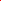
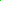
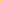
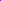
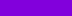

Controlling Colors in GrADS
The GrADS Default Colors
GrADS is built with 16 default colors that are used in a variety of
applications. Every color in GrADS has a unique color number that is used
as an index to identify it in GrADS commands. Complete specifications
of the default colors numbered 0 to 15 are given below:
Col# Description Sample R G B
0 background  0 0 0 (black by default)
0 0 0 (black by default)
1 foreground  255 255 255 (white by default)
255 255 255 (white by default)
2 red  250 60 60
3 green  0 220 0
4 dark blue 30 60 255
5 light blue 0 200 200
6 magenta 240 0 130
7 yellow  230 220 50
8 orange 240 130 40
9 purple  160 0 200
10 yellow/green 160 230 50
11 medium blue 0 160 255
12 dark yellow 230 175 45
13 aqua 0 210 140
14 dark purple  130 0 220
15 gray 170 170 170
Disclaimer: The color samples may not be displayed properly.
The GrADS Default Rainbow Sequence
GrADS creates a default rainbow palette using the following sequence of 13 built-in colors:
| 9 |
14 |
4 |
11 |
5 |
13 |
3 |
10 |
7 |
12 |
8 |
2 |
6 |
|
|
|
|
|
|
|
|
|
|
|
|
|
When drawing contour plots, the default behaviour of GrADS is to color
code the contours and select an appropriate contour interval so that
each contour is a different color and the colors span the range of the
default rainbow sequence. The same principle is behind the selection
of default contour intervals for filled contours and shaded grid
plots.
The scripts "cbar.gs" and "cbarn.gs" will
draw a color key alongside a plot of filled contours or shaded grid
cells; the script uses the query
shades command to get information about the contour levels
and their color shades.
Defining new colors
For some types of displays, the 16 GrADS default colors may not be
suitable or adequate. It is possible for the user to define new colors
using the set rgb command:
For example, let's create a palette of colors for
plotting anomalies. We need to define new colors that will be shades
of blue and red that range in intensity from fully saturated to very
light. White will be the color in the center of the new anomaly
palette.
* These are the BLUE shades
set rgb 16 0 0 255
set rgb 17 55 55 255
set rgb 18 110 110 255
set rgb 19 165 165 255
set rgb 20 220 220 255
* These are the RED shades
set rgb 21 255 220 220
set rgb 22 255 165 165
set rgb 23 255 110 110
set rgb 24 255 55 55
set rgb 25 255 0 0
Overriding the Defaults
Now that we have a set of newly defined colors (numbered 16-25), we
can override the defaults and specify our anomaly palette with exact
contour levels and the colors that go with them. This is accomplished
by using the following commands:
Contour levels and the colors that go with them are reset with every
execution of clear or
display. Thus, it may be
easier to use these commands in a script to avoid typing them over and
over again.
Filled Contours or Shaded Grids: If you are specifying
the levels and colors for filled contours (set gxout shaded) or shaded
grid cells (set gxout
grfill), then the number of colors specified with set ccols must be one larger than the
number of contour levels specified with set clevs. Continuing with our
example of creating an anomaly palette, the commands would have the
following syntax:
Note the "0" contour level has been omitted, but color number "1" is still in
the palette. Drawing a plot with these specified clevs
and ccols and then running the "cbarn.gs" script will
result in the following color key:

Here is example using 6 colors and 5 contour levels that shows how the
filled contours (or shaded grids) relate to the data values:
col1: values <= lev1
col2: lev1 < values <= lev2
col3: lev2 < values <= lev3
col4: lev3 < values <= lev4
col5: lev4 < values <= lev5
col6: lev5 < values
Line Contours: If you are specifying the levels and
colors for line contours (set
gxout contour), then the number of arguments to set clevs and set ccols should be equal -- one
color for each contour.
Plotting Contours of Constant Color
It is sometimes preferable to plot line contours without the rainbow
coloring. An example might be a plot with sea level pressure contours
in one color (red) and 500 mb height contours overlaid in another
color (blue). For drawing all the contours in the same color, use the
set ccolor command:
Omitting Colors
The default behavior of GrADS when plotting filled contours or shaded
grid cells is to colorize all areas. To omit a particular color (or
contour level) from the plot, simply assign the background color. For
example:
This example is similar to the one given above, but notice where some
of the ccols have been set to "0" (the background
color). The first, last, and middle colors have been omitted. These
commands set up a plot that will only shade areas where the anomalies
are between 1 and 5 and -1 and -5. The remaining areas will be black.
Plotting Non-Continuous Index Grids
Plotting grids with index values or non-continuous data (e.g. surface
type classification) is simplified by using the graphics output type
fgrid and the set
fgvals command.
In this example, the variable "sfctype" has three values:
1 represents land, 2 represents oceans, and
3 represents sea ice. These commands would draw a plot
with land grid cells filled with color number 15 (gray), ocean grid
cells filled with color number 5 (light blue), and sea ice grid cells
filled with color number 1 (white). If the first two arguments to set fgvals were omitted, then the
land grid cells would not be omitted and only ocean and sea ice grid
cells would be colored.